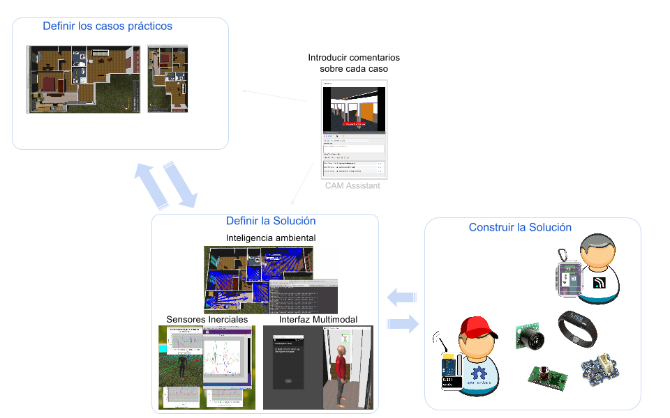
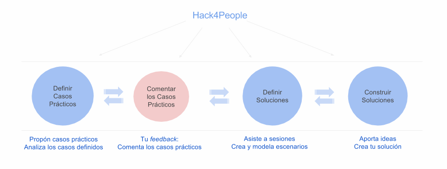
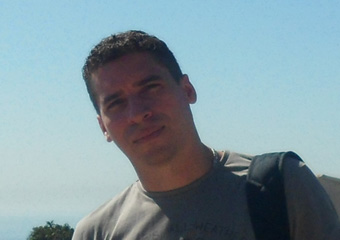

Esta iniciativa persigue identificar y ayudar a entender cómo es la vida de una persona con necesidades especiales. Las personas con necesidades especiales son, o van a ser, una mayoría de la población, ya que según las proyecciones la mayoría de personas tendrán complicaciones propias de la edad de aquí en 20 años posiblemente colapsando los sistemas de asistencia.
Colaborar y encontrar soluciones que ayuden a gente en estas situaciones es el objetivo de esta iniciativa. En esta apuesta participan de forma altruista estudiantes, profesores y profesionales de distintos ámbitos. Queremos imaginar y construir soluciones asistivas, aunque la tecnología todavía no lo permita en algunos casos. Queremos juntar a la gente que conoce los problemas con la gente que tiene los conocimientos para elaborar las soluciones.
Los intentos aislados por crear tecnologías asistivas son arriesgados. En la mayoría de los proyectos reales, se fracasa porque no se conoce el problema a resolver y la solución que se pensaba era necesaria, resulta que no es adecuada. La co-creación es el camino más seguro y para ello, hacen falta mecanismos que permitan a unos explicar cuál es el problema, a otros proponer soluciones, y a ambos el decidir si esas soluciones son las apropiadas.
En esta iniciativa se apuesta por las simulaciones 3D como interlingua que sirva para que todos entiendan de qué se está hablando:
- Para que los profesionales y personas con situaciones especiales puedan expresar qué les ocurre
- Para que los tecnólogos puedan interaccionar con el problema sin hacer grandes inversiones
- Para que las soluciones puedan ser valoradas por todos los participantes, buscando enriquecer el producto antes de empezar a construirlo

Hack4People es una iniciativa para combinar esfuerzos de expertos en el estudio y descubrimiento de tecnologías asistivas para mejorar la calidad de vida de la población. La forma de hacerlo es creando espacios de trabajo donde los usuarios, según su interés, puedan participar en todas las fases del proyecto:

- Conoce los casos de estudios definidos.
- Comenta o sugiere un caso de estudio nuevo, te facilitamos una aplicación web para aportar tus comentarios.
- Una vez analizados los casos de estudio, puedes participar en las sesiones de trabajo donde se definirán soluciones
- Si quieres ir más allá, crea tus propios casos de estudio y modela tus propias simulaciones, tendrás a tu disposición todas las herramientas para ello.
- Cuando se defina una solución para un caso concreto, podrás participar en su construcción o incluso aportar alternativas para su desarrollo. En sesiones de trabajo más técnicas se estudiarán las diferentes propuestas.
-
Pacientes con Alzhéimer
Se simulan síntomas de la enfermedad creando casos de estudios prácticos para poder valorar las dificultades del paciente en situaciones cotidianas.
-
Pacientes con Parkinsón
Se simula la enfermedad en partes concretas del cuerpo y se estudian posibles accidentes del paciente.
CAM Assistant

CAM Assistant es la aplicación Web colaborativa que permite a diferentes expertos participar en el estudio y análisis de las simulaciones de cada caso de estudio. Según el caso de estudio se generá uno o varios vídeos que respresentarán una perspectiva o cámara del escenario construido.
Ver másProyectos Multidisciplinarios
Si eres experto o trabajas en áreas de las Ciencias Sociales o Ciencias de la Salud y consideras que puedes utilizar las simulaciones de comportamiento en algun caso de estudio de tu investigación o sencillamente deseas colaborar en proyectos cuyos casos de uso se pueden estudiar utilizando este tipo de simulaciones puedes hacerlo con nosotros.
Estas son algunas posibles ideas de proyecto:
- Simulación de comportamiento de personas con ceguera
- Simulación de Parkinson en partes concretas del cuerpo
- Simulación de pacientes con parálisis cerebral
- Simulación de pacientes con Alzhéimer
- Simulación de movilidad reducida por efectos del alcohol
Contáctanos
Facultad de Informática
- Lunes - Viernes:
- 9:00-17:00
- Despachos:
- 437, 411
- Teléfonos:
- + 34 91 394 7644
Soporte:
- IP:
- jjgomez@sip.ucm.es
Co-director GRASIA
He joined UCM at the end of 1997, where he created the GRASIA research group, whose focus is on the application of multi-agent systems technology.
Co-director GRASIA
His PhD introduced the INGENIAS methodology for the development of Multi-Agent systems, which has been widely cited. He is the co-director of the GRASIA research group.

Assistant Research GRASIA
Is a PhD student with a FPI contract associated with ColoSAAL project, he joined GRASIA in January 2016, conducts investigations based in the field of Ambient Assisted Living (AAL)
Assistant Research GRASIA
Is currently working at Universidad Complutense of Madrid (UCM) in the project MOSI-AGIL, while studing a M.Sc degree in the same university.